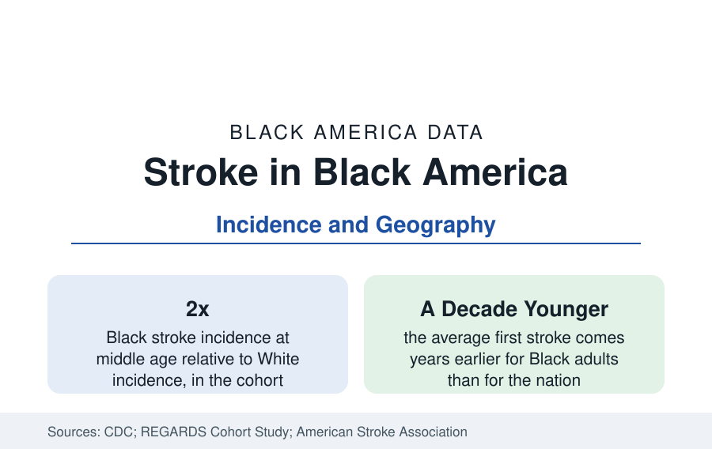

Black Public Health
Stroke Among Black Adults: Earlier, More Often, in the Stroke Belt
Black adults have strokes younger and more often than the nation — with risk concentrated in the Southeast's 'Stroke Belt.' The CDC and REGARDS data.

Stroke is the public health data's most geographic disease, and its map is Black America's map. Black adults suffer strokes at higher rates than the nation — at middle age, roughly twice the incidence in the cohort studies — experience their first stroke years younger on average, and die from stroke at rates roughly a third to a half higher in the vital statistics. The excess concentrates in the southeastern states long labeled the Stroke Belt, and within them in the Black Belt counties of this reference's census profiles. This article reports the stroke data.
Incidence: The Age Pattern Is the Story
The cohort studies — above all REGARDS, the national cohort of more than 30,000 adults built specifically to study geographic and racial differences in stroke — decompose the incidence gap by age, and the decomposition changes its meaning. At ages 45 to 64, Black stroke incidence runs at roughly two to three times White incidence in the cohort data; the ratio narrows with age, approaching parity in the oldest groups. The mortality data rhyme: Black stroke deaths concentrate in middle age, making stroke a leading contributor to the midlife mortality gap of the life-expectancy profile. The implication the literature draws is about timing: the Black stroke burden is not primarily a disease of old age arriving as expected — it is a disease of working age arriving early, which is why its years-of-life-lost figures are so outsized.
The Stroke Belt and the Black Belt
The Southeast's elevated stroke mortality was documented in the mid-twentieth century and named the Stroke Belt: the coastal and inland counties of the Carolinas, Georgia, Alabama, Mississippi, Tennessee, Arkansas, and Louisiana recording rates well above the nation's. The REGARDS analyses then separated the geography from the demography: the Belt's excess applies to its White residents too, but at smaller magnitude, while the Black excess applies nationwide, Belt or not — the two effects stack in the Black Belt, whose counties record the highest stroke rates in the country. The candidate explanations the cohort was built to test — hypertension prevalence and control above all, plus diabetes, diet patterns (the traditional Southern table's sodium and fried-food load, in the dietary substudies), and rural care distance — account for much, not all, of both effects in the published decompositions.
Risk Factors: Pressure Above All
Stroke's risk list is the cardiovascular stack of this section with one factor enthroned: hypertension. The REGARDS and pooled-cohort analyses attribute the largest share of the Black stroke excess to blood pressure — its 55 percent prevalence in the hypertension profile, its earlier onset, and its control rates — with diabetes second. Atrial fibrillation presents the data's noted paradox: it is recorded at lower rates in Black adults than White (a finding persistent across datasets) yet Black stroke patients' events are more severe on average. Sickle cell disease is the pediatric chapter: children with sickle cell face greatly elevated stroke risk, now managed with the screening and transfusion protocols that cut childhood sickle-cell stroke dramatically in the trial era — one of the clearest prevention victories in this section's record.
Care: Minutes and Their Geography
Stroke is the most time-sensitive condition in medicine: clot-dissolving and clot-retrieval therapies work within hours, and their receipt is the outcome variable the hospital data track. The registry studies find Black stroke patients arriving later after symptom onset on average, receiving the acute therapies at lower rates, and — in the rural Stroke Belt — facing the longest transport distances to thrombectomy-capable centers, a geography telestroke networks were built to close. Rehabilitation referral and post-stroke follow-up show the section's familiar gradient. Against that, the long trend is genuinely favorable: Black stroke mortality has fallen by half or more across the modern era alongside the nation's, driven by the same blood-pressure treatment progress recorded in the hypertension profile — the gap has narrowed from its widest even as it remains, in middle age, the widest of the cardiovascular set.
Reading the Stroke Data
Summarized: double incidence in middle age, first events years younger, mortality a third to a half higher, and a geography that stacks the nation's highest rates onto the Black Belt's counties. Stroke is where this section's risk factors, rurality, and care timelines converge into a single event — and where the data most clearly price the value of the blood-pressure control that the hypertension profile shows is available and unevenly delivered.
More in Black Public Health
Hypertension Among Black Adults: Prevalence, Control, and Consequences
About 55 percent of Black adults have hypertension — the highest rate of any U.S. group. Prevalence, onset, control, and the stroke, heart, and kidney consequences in the data.
Diabetes Among Black Adults: Prevalence and Complications
Nearly one in five Black adults has diabetes, diagnosed or undiagnosed — and its complications fall with particular weight. The CDC data on prevalence, control, and outcomes.
Black Life Expectancy: The Gap at Birth and Its Causes
Black life expectancy at birth is about 73 years, roughly five years below the national figure — the summary measure of every health gap in this section. The CDC data.
Source: CDC, National Center for Health Statistics; REGARDS Study (Reasons for Geographic and Racial Differences in Stroke); American Stroke Association.